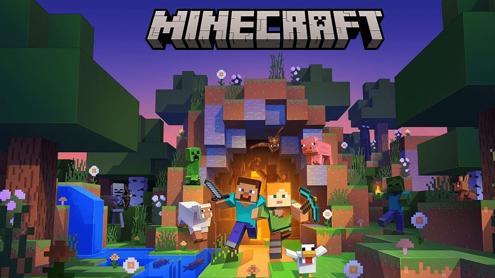

Minecraft
Những động vật như bò, bò nấm, lợn, gà, cừu, ngựa, gấu Bắc Cực, thỏ, cá heo, rùa, mực, dê núi có thể được săn bắt để ăn hay chế tạo vật phẩm và vật liệu, được sinh ra vào ban ngày hoặc bằng các loại trứng spawn ở chế độ sáng tạo.
Người chơi sẽ phải tìm cách sinh tồn và phát triển trong thế giới này bằng cách khai thác tài nguyên và chế tạo đồ vật. Các tài nguyên có thể bao gồm đất đá, cây cối, khoáng sản và động vật. Người chơi có thể khai thác các tài nguyên này bằng cách dùng công cụ phù hợp, ví dụ như búa, xẻng, rìu, và cưa.
Ngoài ra, game còn có một hệ thống chế tạo, người chơi có thể sử dụng các tài nguyên khai thác được để chế tạo đồ vật và công cụ hữu ích cho việc sinh tồn, như nhà cửa, đồ nấu ăn, đồ đánh bộ và vũ khí.
Game Minecraft còn có một thế giới đầy thú vị và nguy hiểm, với những sinh vật như quái vật và phù thủy. Người chơi có thể tìm thấy các cổ vật và bảo vật giúp cho cuộc sống của mình dễ dàng hơn.
Minecraft cũng có tính tương tác cao với cộng đồng game thủ trên toàn thế giới. Người chơi có thể chơi đơn hoặc kết nối với những người chơi khác để thực hiện các nhiệm vụ chung. Game còn cho phép người chơi tùy chỉnh và thay đổi các tính năng và quy tắc của thế giới, để tạo ra một trò chơi thật sự độc đáo và tùy chỉnh cho riêng mình.
Ảnh và video
- 
Tính năng chính
Sinh tồn (Survive)
Sáng Tạo (Creative)
Phiêu lưu (Adventure)
Ở chế độ sinh tồn, việc bạn cần phải làm đó chính là cố gắng làm sao để sống sót trong thế giới mở của Minecraft.
Bạn cần phải tìm kiếm, gom nhặt các tài nguyên như gỗ, đá, sắt, than,...
Ngoài ra bạn cũng cần để ý thanh thức ăn, máu và những quái vật có thể tấn công và giết chết bạn bất kì lúc nào.
Chế độ sáng tạo là nơi bạn có thể thỏa sức sáng tạo, từ xây dựng, khám phá, cũng như là nơi sẽ đưa trí tưởng tượng bất tận của bạn đi thật xa.
Chế độ phiêu lưu tạo ra để có sự tò mò khám phá, chế độ cho phép bạn có thể trải nghiệm dùng những bản đồ tạo ra tùy chỉnh và đi phiêu lưu tới mọi ngóc ngách ở bản đồ. Cách chơi giống như chế độ sinh tồn nhưng hạn chế và phá các khối vật liệu.
Tải game
Bạn có thể tải game tại đây: